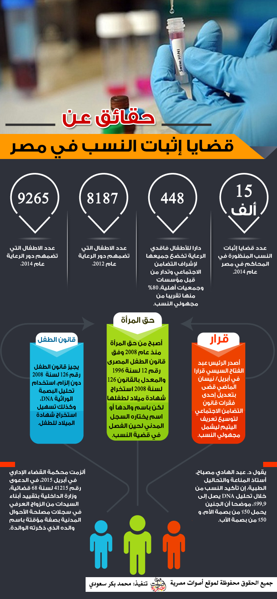

أحدث الأخبار
- مقتل 3 أشخاص وإصابة 3 آخرين في حادث مروري بالبحيرة
- وزير الخارجية يجري اتصالاً مع رئيس المجلس الرئاسي الليبي
- عاصمة مصر تتجه لزيادة سكانية نصف مليون العام الجاري
- باولو يقود هجوم الزمالك أمام رينجرز في دوري الأبطال
- المالية تعفي المطاعم غير السياحية من ضريبة القيمة المضافة بشروط
- "القضاء الإداري" يلزم الجامعة الأمريكية بتحصيل مصروفاتها بالجنيه المصري
- البورصة ترتفع بنسبة 0.52% في نهاية التعاملات
- إعادة فتح موانىء السويس بعد تحسن الأحوال الجوية
قضايا إثبات النسب.. براءة تموت في دهاليز المحاكم

صورة للفنانة زينة والفنان أحمد عز- الشروق
آﻻف الأطفال والأمهات يمضون سنوات في متاهة التقاضي
القانون غير ملزم بتحليل البصمة الوراثية وحيل المحامين تطيل أجل التقاضي
تزايد حالات الزواج غير الرسمي يفاقم المشكلة
تحقيق: أمنية طلال
جرة قلم.. أوقف بها الأب سداد نفقة ابنته بعد أربع سنوات من انفصاله عن أمها. وأمضت الأم (ن.أ) 49 عاما، أكثر من عقدين من الزمان في أروقة المحاكم لتتصدى لحيل محامي الزوج وتكسب دعوى اثبات النسب في نهاية الأمر عام 2011.
خلال ماراثون التقاضي عجزت (ن.أ) عن استخراج بطاقة رقم قومي لابنتها، إلا عندما بلغت سنّ الخامسة والعشرين من العمر وذلك بعد صدور الحكم النهائي.
تزوجت (ن.أ) عرفيا من (ع.ع) 53 عاما، والذي أحبته على مدى سنوات. وفي عام 1985 جعلا هذا الزواج رسميا مع اقتراب ولادة طفلة لهما. لكن الزواج الرسمي لم يستمر طويلا نتيجة خلافات عائلية، وظل (ع.ع) يدفع نفقة لابنته لمدة أربع سنوات بناء على اتفاق ودي إلى أن فوجئت الأم به يتوقف عن سداد النفقة ويرفع دعوى انكار نسب في عام 1990. واستغل محامي الزوج مسألة أن الطفلة ولدت بعد أيام من توقيع عقد الزواج الرسمي. وقضت المحكمة ببطلان نسب الطفلة إلى أبيها.
ورفض السجل المدني استخراج بطاقة رقم قومي للابنة بسبب وجود حكم ببطلان نسبها لأبيها لتعود الأم إلى المحاكم مجددا في 2008 على أمل أن تبطل الحكم السابق. واستمرت مداولات القضية الجديدة حتى عام 2011 وهو العام الذي قضت به المحكمة بإلغاء حكم بطلان النسب. واستندت المحكمة إلى أن الأب ظل على مدى أربع سنوات يدفع نفقة لابنته ما يعني اعترافه بها.
مأساة أخرى تحت عنوان "التالتة ثابتة".. قال الأب هذه العبارة، كأنما يطلق حكم الإعدام على حياته الأسرية بعدما أنجبت له زوجته بنتا ثالثة من زواجهما الرسمي الموثق.
قالها ورحل غير عابيء بنظرات بريئة متسائلة في عيون ابنتيه اللواتي رفض استخراج شهادات ميلاد لهن ليتجنب مطالبته بالإنفاق عليهن، مستغلا القانون الذي يمنح الأب وحده حق تسجيل الأبناء باسمه.
تقول (ف.ع) - الأم الخمسينية - إنها اضطرت للعمل خادمة في المنازل لإعالة أطفالها بعدما هجر الأب أسرته عقب ست سنوات من الزواج.
كبرى البنات أصبحت الآن في الثالثة والعشرين من العمر وأصغرهن في السابعة عشرة، لكنهما حتى اللحظة، بدون أي أوراق ثبوتية مما منعها من اﻻلتحاق بالتعليم أو الحصول على فرصة عمل دائمة.
بعد سنوات من الكفاح أنهكت جسد الأم، قررت الأم رفع دعوى طلاق تتيح لها الحصول على معاش ضمان اجتماعي. ليدلها موظف في المحكمة على مؤسسة حقوقية أهلية رفعت لها دعوى اثبات نسب وطلاق في آن واحد. وبعد عام ونيّف -نهاية العام 2011 - حصلت على حكم بإثبات نسب البنات لأبيهن.
نعمة، الإبنة الكبرى لم تتعلم لعدم استخراج شهادة ميلاد لها، وأغلقت كل أبواب العمل في وجهها لعدم حصولها على بطاقة رقم قومي وبالتالي لم تستطع اتمام زواجها.
قضيتا (ن.أ) و(ف.ع) وبناتهما ماهما إلا أمثلة لنحو 15 ألف قضية دعوى اثبات نسب في العام 2014 تٌنظر الآن في المحاكم المصرية وفق تقديرات قضاة، إذ تدفع الأم والأطفال ثمنا باهظا لتعنت آباء تحجرت قلوبهم وحيل محامين لإطالة أمد الدعاوى القضائية وضعف الإطار القانوني المتمثل في قانون الأحوال الشخصية رقم 25 لسنة 1920 المعدل بالقانون 25 لسنة 1929 المعدل بالقانون 100 لسنة 1985 حسب ما يكشفه هذا التحقيق الاستقصائي الذي تتبع ست قضايا اثبات نسب.
هذه المعاناة، تنسحب على الأطفال سواء كان أباؤهم متزوجين زواجا رسميا موثقا أم عرفيا غير مسّجل، لأن القضاء غالبا ما يرفض دعوى اثبات النسب لاستناده إلى الراجح في الفقه بأن الابن هو (الابن للفراش).
يفاقم الحال غياب نص في القانون المصري يلزم المتنازعين بإجراء تحليل الحمض النووي للأب، وهو ما يعده خبراء دليلا جازما تصل نسبته إلى 99.9 % في حسم هذه القضايا. حيث لا تجري هذه الفحوصات إلا إذا وافق الأب على إجرائها لكن المحكمة لا تلزم الأب بإجراء التحاليل.
تقول انتصار السعيد، مديرة مركز القاهرة للتنمية وحقوق الإنسان، الذي رفع الدعاوى القضائية نيابة عن الأم إن (ف.ع) من المحظوظين فلم تستغرق قضيتها سوى سنة وبضع أشهر فقط، وما سهّل هذا الأمر هو أن الزوج لم يهتم بالحضور للمحكمة أو توكيل محام وبالتالي قضت المحكمة بنسب البنات له. حيث مكّن الحكم القضائي الأم من استخراج أوراق ثبوتية لبناتها باعتبارهن بدون قيد.
يقدّر المستشار حسن منصور، نائب رئيس محكمة النقض، عدد قضايا إثبات النسب المنظورة في المحاكم في مصر بحوالي 15 ألف قضية في عام 2014 فقط. ولا يوجد إحصاء يوضح كم من هذه القضايا نتيجة زواج عرفي، أو رسمي، أو علاقة غير زوجية.
يرجع حقوقيون إنكار الآباء لأطفالهم عدة أسباب تتمثل بالفقر وعدم الرغبة في الإنفاق عليهم، أو منع حصولهم على حقوقهم الشرعية في الميراث في حالة إنجاب الإناث، أو إنجاب الأطفال من زواج العرفي.
(ع.م) ، البالغة من العمر 24 عاما، بدأت معاناتها عندما علم زوجها أنها حامل في بنت، فقام بطردها ورفض إثبات نسب البنت له قائلا "أنا مش عاوز بنات"، وقتها لم تعرف (ع.م) كيف تحصل على حقها في نسب ابنتها لأبيها حتى نصحتها جارتها المحامية باللجوء مركز القاهرة لتنمية وحقوق الإنسان وقررت إقامة دعوى قضائية للحصول على حقها وحق ابنتها.
وبالفعل أقامت دعوى من خلال المركز في يوليو/ تموز 2013، وبقيت القضية حوالي سنة تقريبا دون فصل، وقبل جلسة الحكم طلب الزوج من الزوجة التنازل عن القضية في المحكمة، وقتها حصل القاضي منه على تعهد باستخراج شهادة ميلاد للبنت قبل الفصل في القضية بشهرين.
لكنه عاد وفعل فعلته من جديد وطردني مرة أخرى في حملي الثاني - تقول (ع.م)- ورفض الاعتراف به قبل ولادتي، وهو ما دفعني لبدء إجراءات إقامة دعوى أخرى".
إجراءات إثبات نسب أطفال ناتجين عن زواج عرفي، حسب تصريحات المحامي محمد الدكر، تتم من خلال عقد زواج عرفي وشهادة شهود لتأكيد علاقة الزواج، أو من خلال إثبات الإقامة مع الزوج في منزل زوجية. أما في حالة إثبات نسب أطفال ناتجين بدون زواج، فلا يوجد أمام الأم سوى إثبات الزواج الشفوي من خلال الشهود، أو أن يتم إجراء تحليل الـ DNA . وفي حالة امتناع الزوج عن إجراء التحليل باعتباره غير ملزم فلا يوجد ما يثبت نسب الطفل لأبيه وغالبا يتم رفض دعوى النسب لأن القضاء يستند إلى الراجح في الفقه بأن (الابن للفراش)، ويكون إثبات علاقة الزواج من خلال الشهود أو عقد عرفي أو عقد رسمي ضرورية لإثبات النسب.
وفي حالة الزواج الشرعي يتم إثبات علاقة الزواج من خلال عقد الزواج الرسمي، وشهود إثبات علاقة الزواج.
تقول فوزية حسن، مسؤولة إدارة الرعاية البديلة بالإدارة العامة للأسرة والطفولة بوزارة التضامن الاجتماعي، إنه يوجد في مصر 448 دارا للأطفال فاقدي الرعاية تخضع جميعها لإشراف التضامن الاجتماعي وتدار من قبل مؤسسات وجمعيات أهلية.
وتضيف أن أطفال هذه الدور بينهم 80% تقريبا من مجهولي النسب، في حين أن نسبة قليلة منهم أيتام، أو محرومون من الرعاية نتيجة مرض العائل أو سوء حالته الاقتصادية.
وتوضح فوزية أن دور الرعاية ضمّت 8187 طفلا في العام 2012، وارتفع العدد إلى 9265 في العام 2014.
الحق في الهوية
تنص المادة (7) من اتفاقية حقوق الطفل التي أقرتها الجمعية العامة للأمم المتحدة في نوفمبر/ تشرين ثاني 1989، وبدأ تطبيقها في سبتمبر/ أيلول 1990، وإنضمت مصر إليها في 24/5/1990، قبل دخولها حيز التنفيذ بأشهر قليلة، على أن يسجل الطفل بعد ولادته فورا ويكون له الحق منذ ولادته في الاسم والجنسية، ويكون له قدر الإمكان الحق في معرفة والديه وتلقي رعايتهما. لكن ضعف التشريع المصري قانون الأحول الشخصية رقم 25 لسنة 1920 المعدل بالقانون 25 لسنة 1929 المعدل بالقانون 100 لسنة 1985 وحيل المحامين تعرقل حصوله على هذا الحق بسهولة.
وتكفل الدول الأطراف في اﻻتفاقية - التي تحظى بما يشبه الإجماع العالمي فكل دول العالم أطراف في الاتفاقية عدا أمريكا والصومال- إعمال هذه الحقوق وفقا لقانونها الوطني والتزاماتها بموجب الصكوك الدولية المتصلة بهذا المجال، ولا سيما أن الطفل يعد "عديم الجنسية" في حال لم يطبّق ذلك.
وتنص المادة 8 على أن تتعهد الدول الأطراف باحترام حق الطفل في الحفاظ على هويته بما في ذلك جنسيته، واسمه، وصلاته العائلية، على نحو يقره القانون.
وإذا حُرم أي طفل بطريقة غير شرعية من بعض أو كل عناصر هويته، تقدم الدول الأطراف المساعدة والحماية المناسبتين من أجل الإسراع بإعادة إثبات هويته.
تنص المادة (15) من قانون الطفل المصري رقم 126 لسنة 2008 على أن "الأشخاص المكلفين بالتبيلغ عن الولادة هم والد الطفل إذا كان حاضرا، ووالدة الطفل شريطة إثبات العلاقة الزوجية على النحو الذي تبينه اللائحة التنفيذية، ومديرو المستشفيات والمؤسسات العقارية ودور الحجر الصحي وغيرها من الأماكن التى تقع فيها الإدارات، والعمدة أو الشيخ في حالة الزواج المثبت.
ويجيز قانون الطفل رقم 126 لسنة 2008 دون الزام، استخدام تحليل البصمة الوراثية DNA، وكذلك تسهيل استخراج شهادة الميلاد للطفل، فبعد أن كان لايسمح للمرأة باستخراج شهادة ميلاد لطفلها في الحالات الطبيعية (الزواج الرسمي) وكان يسمح بذلك فقط للأب أو الجد أو العم، أصبح من حق المرأة منذ عام 2008 وفق قانون الطفل المصرى رقم 12 لسنة 1996 والمعدل بالقانون 126 لسنة 2008 استخراج شهادة ميلاد لطفلها لكن باسم والدها أو اسم يختاره السجل المدني لحين الفصل في قضية النسب.
الزواج السري
غير أن المحامي طاهر أبو النصر يوكد أن أغلب دعاوى إثبات النسب ترتبط بحالات زواج عرفي، أو سري، بعد إنكار الأب للأطفال من تلك الزيجات، إلى جانب حالات زواج شرعي.
ويضيف أن القضايا تستغرق وقتا طويلا في حالة عدم استطاعة المرأة إثبات علاقة الزواج.
ويشير أبو النصر إلى مشكلة الزواج السري، الذي يتم باتفاق بين رجل وامرأة بصورة سرية، قد يكتبان ورقة ولا يوثّقان هذا الزواج ولا يعلم الأهل به ولا يحضره شهود. ويضيف أن هذه الزيجات فاقمت مشاكل إثبات نسب الأبناء.
يقول مستشار بمحكمة زنانيري للأسرة بالقاهرة، والذي طلب عدم ذكر اسمه، إن إثبات النسب في مصر مازال قائما حتى الآن على الأدلة الشرعية، وليس من ضمنها تحليل الـDNA، موضحا أن عدم إثبات علاقة الزواج يتسبب في رفض الدعوة.
ويشير إلى أن الأم صاحبة الدعوة تلجأ لإثبات علاقة الزواج من خلال الشهود أو العقد الشرعي أو العقد العرفي، قائلا "إذا لم تثبت الأم علاقة الزواج لن ينفذ الحكم، فثبوت الزواج في القضية يعني ثبوت النسب".
وعن تعطيل قضايا النسب في المحاكم، يوضح أن القاضي ينظر أكثر من 70 قضية أحوال شخصية في يوم واحد، مؤكدا أن هذه التكدس للقضايا يدفع القاضي للتأجيل لأكثر من مرة، ويعطل سير القضايا بشكل طبيعي.
من مجهول إلى يتيم
غير أن الرئيس عبد الفتاح السيسي أصدر قرارا في أبريل/ نيسان الماضي قضى بتعديل إحدى فقرات قانون التضامن الاجتماعي لتوسيع تعريف اليتيم ليشمل مجهولي النسب، لكن تبقى خطوة اثبات النسب مشكلة مزمنة.
وعدّل القرار في المادة الثانية من قانون التضامن الاجتماعي، رقم 137 لسنة 2010، ليقضي بتعريف اليتيم بأنه "كل من توفي والداه، أو توفي والده ولو تزوجت أمه، أو مجهول الأب أو الأبوين".
ويتضمن التعديل تحويل مجهولي الأب أو الأبوين من فئة مجهولي النسب، حسب القانون القديم، إلى فئة الأيتام، وفقا للتعديل.
يقول هاني هلال رئيس الائتلاف المصري لحقوق الطفل، إن تعديل القانون واعتبار مجهولي النسب أيتاما يعني إقرار حقوق اقتصادية واجتماعية بالمساواة مع الأطفال الأيتام.
وألزمت محكمة القضاء الإداري في أبريل 2015، في الدعوى رقم 41215 لسنة 68 قضائية، وزارة الداخلية بتقييد أبناء السيدات من الزواج العرفي في سجلات مصلحة الأحوال المدنية بصفة مؤقتة باسم والده الذي ذكرته الوالدة، إلى أن تقضي المحكمة المختصة في واقعة ثبوت نسبه إلى والده، كما اعتبرت المحكمة وزارة التربية والتعليم، ملتزمة بقبول الطفل في إحدى المدارس التي تتناسب ومرحلته العمرية.
استندت المحكمة في حكمها إلى أن المشرع في أحكام الدستور المصري و قانون الطفل وقانون الأحوال المدنية، أعلى حق الطفل في نسبه إلى والديه وحصوله على اسم يميزه في المجتمع، ويحفظ له كرامته وإنسانيته ويتمتع بكافة الحقوق ومنها الحق في التعليم والصحة، وهو حق أولى بالرعاية والحماية، لكون الصغير يقع في مركز قانوني أعلى مما قد يثور من خلاف حول صحة العلاقة الزوجية أو ثبوت النسب لوالديه أو أحدهما.
تقول انتصار السعيد، إنه في حالة الأطفال المولودين بدون زواج فيتم تسجيلهم باسم الأم ويختار السجل اسم الأب، موضحة أن الطفل يقيد وفق كود لا يعرفه إلا السجل المدني يفيد بأن الطفل مجهول نسبه، حتى يتمكن من الحصول على شهادة ميلاد تتيح له الحصول على التطعيمات، والانتظام في الدراسة، لكنه لا يتمتع بأي حقوق أخرى من نفقة أو ميراث أو معاش لأبيه، لحين إثبات النسب.

قضايا إشهار النسب تطال المشاهير أيضا
ومن الدعاوى الشهيرة لاثبات النسب قضية الفنانة (ش.أ)، التي عانت لسنوات لتثبت نسبها إلى عائلة مشهورة، إذ تزوجت والدتها سرّا من المحامي (أ.أ)، وبعد 16 عاما قضتها (ش.أ) بين أروقة المحاكم، قضت المحكمة بنسبها إلى والدها، حسب ما نشره الموقع الالكتروني لقناة العربية.
أما الفنان (أ.أ)، فقد أنهى قصته مع قضية النسب، بإعلان زواجه عرفيا من (ه.أ)، وقضت محكمة استئناف الأسرة بزنانيري في حكم نهائي بإثبات نسب الطفلة إلى (أ.أ) بعد عامين قضاهما في المحاكم، رفض خلالهما إجراء تحليل إثبات نسب، وأجرى عشرات الحوارت في الفضائيات، أنكر فيها زواجه من (ه.أ) عرفيًا، وأبوته لابنته وفق الموقع الالكتروني لقناة العربية كذلك.
واستغرقت قضية الفنانة زينة ضد الفنان أحمد عز 18 شهرا وهي فترة قصيرة مقارنة بالقضايا الأخرى.
وكان عز أنكر الزواج ورفض إجراء تحليل الحمض النووي لكن المحكمة اعتبرت الزواج حقيقيا بعد إثبات زينة للزواج بقرائن مادية وبالتالي استندت للراجح في الفقه في المذهب الحنفي الذي يقول إن "الولد للفراش"، عملا بنص المادة 4 من القانون 1 لسنة 2001، ونص المادة 280 من القانون 78 لسنة 1931. وفق تصريحات محمد الدكر محامي زينة لـ"أصوات مصرية".
إلا أن دفاع الفنان أحمد عز تقدم باستئناف على حكم محكمة الأسرة بإثبات نسب توأم الفنانة زينة له، ما يعني جولة أخرى من التقاضي.
طول أجل التقاضي
رغم أن القوانين والاتفاقيات الدولية كفلت للطفل الحق في الحصول على اسم ونسب، إلا أن الواقع يؤكد أن قضايا إثبات النسب في مصر تستغرق سنوات في المحاكم، تئد آمال الصغار في طفولة بريئة حالمة خالية من المشاكل.
ويرجع ذلك إلى عدم وجود نص في القانون المصري يلزم المتنازعين في قضايا النسب بإجراء تحليل الحمض النووي.
وطالب الاتحاد النوعي لنساء مصر -الذي تأسس عقب ثورة 25 يناير للدفاع عن حقوق المرأة- بتعديل قانون الأحوال الشخصية المصري على أن تضاف على القانون مواد جديدة ويتم توحيد كل قوانين الأسرة في قانون موحد، بهدف حصول المرأة على جميع حقوقها القانونية، على أن يلزم الأب بإجراء تحليل الـDNA.
ويقول محمد الدكر، محامي الفنانة زينة، لأصوات مصرية، إن إجراءات التقاضي يمكن أن تمتد لوقت طويل استغلالا لنصوص المادة (9) من القانون 10 لسنة 2004 الخاص بمحاكم الأسرة، والمادة (63) من قانون المرافعات.
وتنص المادة (9) على أن لا تقبل الدعوى التي ترفع ابتداء إلى محاكم الأسرة بشأن منازعات يجوز فيها الصلح وتشترط تقديم طلب إلى مكتب تسوية المنازعات الأسرية المختص ليتولى مساعي التسوية بين أطراف الدعوى.
وقال الدكر، إن مكتب تسوية المنازعات بالمحكمة التي ستنظر الدعوى، يستغرق 15 يوما في محاولة إصلاح ذات البين.
ويضيف أنه "بعد ذلك يذهب مقدم الطلب إلى المحكمة أي إلى قلم كتاب المحكمة، ويرفع دعوى بصحيفة يذكر فيها أسانيده ومواده القانونية وطلباته".
وتستكمل الإجراءات بذهاب صاحب الدعوى بصحيفة الدعوى إلى مكتب المحضرين الخاص بمحاكم الأسرة الذي يعلم الخصم بهذه الدعوى، فإذا ما جاءت الجلسة الأولى ولم يحضر الخصم يعاد إعلانه مرة أخرى، ثم تمضي الدعوى وتستغرق كل مرحلة مددا طويلة.
وتنص المادة (63) على أن تشمل صحيفة الدعوى البيانات الآتية:
(1) اسم المدعي ولقبه ومهنته أو وظيفته وموطنه واسم من يمثله ولقبه ومهنته أو وظيفته وموطنه.
(2) اسم المدعي عليه ولقبه ومهنته أو وظيفته وموطنه فإن لم يكن موطن معلوم فآخر موطن كان له.
(3) تاريخ تقديم الصحيفة.
(4) المحكمة المرفوعة أمامها الدعوى.
(5) بيان موطن مختار للمدعي في البلدة التي بها مقر المحكمة إن لم يكن له موطن فيها
(6) وقائع الدعوى وطلبات المدعي وأسانيدها.
يقول الدكر "لم تستغرق قضية زينة سوى 18 شهرا في حين تظل قضايا أخرى لسنوات"، مشيرا إلى محاولات الخصوم لإطالة أجل التقاضي بكتابة محاضر وطلب ضمها للقضية، أو تقديم مستند كل جلسة، أو تقديم شكاوى في المحكمة ما يستوجب رد هيئة المحكمة.
قصور في القانون
ويضيف أن من ضمن إجراءات الإثبات تحليل الحمض النووي (DNA) لكنه غير ملزم ولا يترتب على عدم القيام به عقوبة، معتبرا ذلك قصورا في التشريع المصري، لكنه يرى أن امتناع الخصم عن إجراء التحليل يؤخذ كقرينة ضده.
ويوضح الدكر أن عجز الأم عن إحضار شهود ﻻثبات الزواج يترتب عليه رفض الدعوى، فهي قرينة لمصلحة الخصم.
وتشير فاطمة صلاح، رئيس الوحدة القانونية بمركز القاهرة للتنمية، إلى أن هذه النوعية من القضايا يجب ألا تستغرق أكثر من ستة أشهر في المحكمة، في حالة سير الإجراءات بشكل طبيعي، لكنها غالبا تظل في المحكمة لسنوات نظرا لرفض الأب إجراء تحليل DNA للبصمة الوراثية، وبالتالي يقع على الأم إثبات الزواج.
يقول المحامي طاهر أبو النصر ، إن "منظومة التقاضي في مصر تحتاج إلى إعادة بناء"، موضحا أن دعاوى إثبات النسب تستغرق سنوات في المحاكم نتيجة حيل المحامين وطول أجل التقاضي، وعدم الزام الخصم بإجراء تحليل DNA.
ويضيف أن الخصم غالبا ما يلجأ إلى تقديم مستند جديد كل جلسة لمد طول فترة التقاضي، وإجراء محاضر بدون سبب وطلب ضمها للقضية لتعطيل الفصل فيها في محاولة لكسب وقت أطول.
دليل حاسم
فيما يقول د. عبد الهادي مصباح، أستاذ المناعة والتحاليل الطبية، إن تأكيد النسب من خلال تحليل DNA يصل إلى 99,9%، موضحا أن الجنين يحمل 50% من بصمة الأم، و50% من بصمة الأب.
ويتابع مصباح "في حالة عدم وجود الأب يمكن إثبات النسب من خلال العم والخال حيث يحمل الطفل 25% من البصمة الوراثية للعم، و25% من البصمة الوراثية للخال".
ويؤكد أن تحليل DNA هو أدق تحليل يمكن إجراؤه للتأكد من البصمة الجينية، قائلا إن "تحليل DNA بيجيب من الأخر ومفيش حاجة تانية ممكن من خلالها نثبت النسب".
ومن جانبه، أكد د. محمود أحمد علي كبير الأطباء الشرعيين، أن الطب الشرعي هو الجهة الرسمية الوحيدة المختصة بإجراء تحليل DNA، موضحا أنه الوحيد المعتمد أمام المحاكم والنيابات.
وﻻ تزيد تكلفة التحليل لكل عينة في الطب الشرعي عن 400 جنيه (حوالي 50 دوﻻرا).
ويوضح أن الأمر يستدعي أحيانا الحصول على عينات من الأم والأب والأعمام في القضية الواحدة للتأكد من النسب.
وإذا كان الزام الآباء باجراء هذا التحليل يكفل حسم المسألة والإجابة على تساؤل قد يلاحق الطفل طول عمره عن هوية والده إﻻ أن الجراح التي يخلفها إنكار الأب لأطفاله ﻻ يمكن للقانون أن يداويها وﻻ أن يستعيد أيام البراءة الضائعة.
أنجز هذا التحقيق بدعم وإشراف شبكة أريج ( إعلاميون من أجل صحافة استقصائية عربية) www.arij.net


تعليقات الفيسبوك